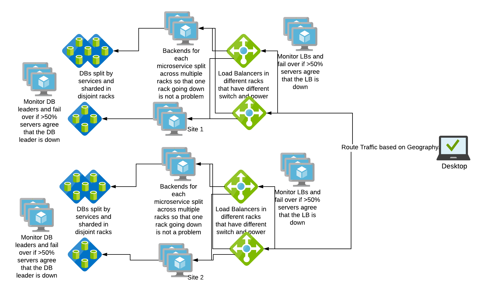

HA - 可用性 - 常見的「九位數」（Nines）
可用性通常以「九位數」表示，常見的「九位數」列於下表。
| 可用性 % | 每年停機時間 | 每月停機時間 | 每週停機時間 | 每日停機時間 |
|---|---|---|---|---|
| 99%（兩個九） | 3.65 天 | 7.31 小時 | 1.68 小時 | 14.40 分鐘 |
| 99.5%（兩個半九） | 1.83 天 | 3.65 小時 | 50.40 分鐘 | 7.20 分鐘 |
| 99.9%（三個九） | 8.77 小時 | 43.83 分鐘 | 10.08 分鐘 | 1.44 分鐘 |
| 99.95%（三個半九） | 4.38 小時 | 21.92 分鐘 | 5.04 分鐘 | 43.20 秒 |
| 99.99%（四個九） | 52.60 分鐘 | 4.38 分鐘 | 1.01 分鐘 | 8.64 秒 |
| 99.995%（四個半九） | 26.30 分鐘 | 2.19 分鐘 | 30.24 秒 | 4.32 秒 |
| 99.999%（五個九） | 5.26 分鐘 | 26.30 秒 | 6.05 秒 | 864.0 毫秒 |
參考
HA - 可用性 串聯元件
當系統元件以串聯方式運作，任何一部件的失效都會導致整個組合無法運作。
例如，如果我們架構中的負載平衡器（LB）失效，所有對應用層的存取都會失敗。LB 和應用層是串聯連接的。
系統的綜合可用性為各元件可用性的乘積：
A = Ax x Ay x …..
參考
HA - 可用性 並聯元件
當系統元件以並聯方式運作，某一部件失效時，其他部件能接管失效部件的工作。
如果我們有多個負載平衡器（LB），在其中一個故障時，其他 LB 能接手流量，則 LB 是並聯運作。
系統的綜合可用性為：
A = 1 - ( (1 - Ax) x (1 - Ay) x ….. )
參考
HA - 核心原則
消除單點故障（SPOF），即添加系統冗餘，使某個元件失效不會導致整個系統失效。
可靠的切換，在冗餘系統中，切換點本身往往會成為新的單點故障。可靠系統必須實現可靠的切換。
故障即時偵測，若前兩個原則得到遵守，用戶甚至可能感覺不到故障。
參考
HA - 單點故障（SPOF）
是什麼： 永不實施，並且總是要消除單點故障。
何時使用： 架構審查及新設計時。
如何使用： 在架構圖中找出單一實例。盡力實現雙活（active/active）配置。至少應有備用實例，在活躍實例失效時接管。
原因： 多實例最大化可用性。
主要重點： 優先雙活架構而非主從（active/passive）。使用負載均衡器將流量分配到服務多個實例。針對需要單例（singleton）模式，採用控制服務的主從配置。
HA - 可靠切換
是什麼： 確保系統元件切換時能可靠運作。
何時使用： 架構審查、故障建模與設計階段。
如何使用： 評估切換期間系統的可用性，確認其在可接受範圍內。
原因： 最大化可用性並確保資料處理語義一致。
主要重點： 優先雙活配置降低切換不可靠風險。使用負載均衡器和適當技巧確保可靠故障轉移。設計資料系統保證切換時資料正確處理。資料庫系統通常採用主從語義，主節點接受寫入，主節點故障時從節點提升為主節點接受寫入。務必避免切換過程中出現多個主節點，避免「分裂腦」（split brain）問題。
在 SRE 角色中的應用
- SRE 決定可接受的 SLA，確保系統可用達成 SLA 目標。
- SRE 參與架構設計，從建置資料中心確保網站不受網路交換器、硬體、電力或軟體故障影響。
- SRE 進行故障模擬演練，觀察系統在未知狀況下的表現，並提出改進可用性的計畫。 https://engineering.linkedin.com/blog/2017/11/resilience-engineering-at-linkedin-with-project-waterbear
根據我們對 HA 的理解，我們的架構圖如下所示：
